Deploying CDO-Managed FTDv Cluster in AWS
Many companies are shifting their workloads to the cloud and it's important to deploy a level of segmentation to protect from Internet threats as well as Internal.
Cisco has a next-generation firewall that has a perfect fit to handle this requirement.
Starting with version 7.2, Secure Firewall Threat Defense (aka FTD) supports clustering capabilities that we're used to with hardware models in virtualization environments such as AWS.
As with hardware models, the members of the cluster utilize CCL link to exchange control and redirected data plane packets. Unlike hardware models, however, the virtual firewalls use VXLAN protocol to exchange data. This is mainly due to cloud environments not providing Layer 2 network capabilities.
Another requirement with CCL links that remains the same on the virtual platforms as of 7.3 version is that the CCL interfaces of all firewalls in the cluster must be in the same subnet. For AWS that means that all members of the cluster must be in the same Availability Zone.
To achieve multi-AZ resilience, we have to deploy as many clusters as we have availability zones. In this post, we will use two AZs.
For data plane traffic in AWS, the cluster will integrate with AWS Gateway Load Balancer (GWLB). Even though we have more than one firewall cluster, we're still able to have GWLB forward traffic to all of them. In this post, we will use transit gateway (TGW) to forward traffic to the firewalls. TGW will maintain persistence for all connections matching a specific source and destination. This ensures that we don't send the same connection to two different clusters. TGW delivers this capability using Appliance mode attachment.
For management of the two clusters, we will use Cloud-Delivered Firewall Management Center (cdFMC) which is a part of Cisco's cloud-based firewall management service named Cisco Defense Orchestrator (CDO).
Full code for this post is available here: https://github.com/vbobrov/terraform/tree/main/aws/ftdv-cluster
For additional information see this link: https://www.cisco.com/c/en/us/td/docs/security/secure-firewall/management-center/cluster/ftdv-cluster-public.html
Topology
The following diagram shows the topology used for this post. The route tables shown in green are VPC route tables and purple are Transit Gateway route tables.
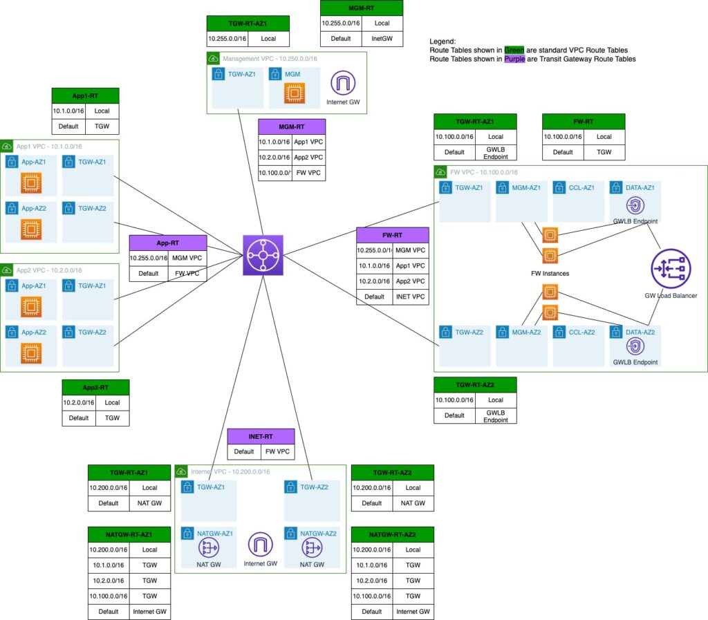
Firewall VPC
Components related to the firewall clusters are deployed in a dedicated VPC. In this VPC, we're deploying two firewalls in each availability zone.
The VPC also hosts the GWLB and GWLB Endpoint (GWLBe). More on traffic flow shortly.
Firewalls have 3 interfaces:
- Management
- Cluster Control Link (CCL)
- Data. Traffic is encapsulated using GENEVE protocol which is loosely based on VXLAN.
When integrated with GWLB, Cisco Secure Firewalls only support Single-Arm mode. In this mode, traffic comes in and out on the same data interface.
This also means that any policies on the firewall must be based on IP addresses and not on interface zones.
Internet VPC
When using Gateway Load Balancing, the firewalls acts as a bump on the wire. The traffic comes it to the firewall, the firewall inspects it and then it either blocks it or forwards it on. We cannot utilize NAT on the firewalls.
Any Internet bound traffic is forwarded to another VPC where it's address translated by the NAT Gateways.
Application VPCs
For this post, we're using two VPCs that host simple Linux instances to verify that traffic between those two VPCs as well as towards the Internet is indeed inspected by the firewall clusters.
Management VPC
This VPC hosts an Internet accessible host to gain access to other hosts in the environment. For production deployments, firewalls and other hosts would likely be accessed over a VPN or Direct Connect attachment
Transit Gateway
Routing between VPCs in this topology is handled by TGW which provides a scalable way to connect many VPC and networks.
Traffic Flow
AWS has a few documents detailed the traffic flow with GWLB. One of them is this: https://aws.amazon.com/blogs/networking-and-content-delivery/best-practices-for-deploying-gateway-load-balancer/
App to Internet
This shows animation of Internet-bound traffic
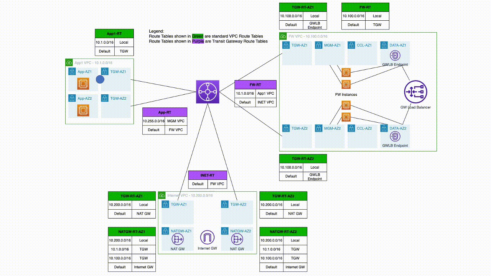
Forward traffic
- Linux host sends traffic towards the Internet
- VPC route table has a default gateway out of that App subnet going to TGW
- TGW route table for App VPC sends that via default route to firewall VPC
- Traffic arrives in firewall VPC in TGW subnet. Default route in that subnet points to GWLBe
- GWLBe sends that traffic to GWLB
- GWLB sends it to one of the firewalls, encapsulated in GENEVE
- Firewall inspects that traffic and returns it to GWLB via GENEVE
- GWLB sends that to GWLBe
- The default gateway for the subnet where GWLBe is connect points to TGW
- TGW route table for firewall VPC has a default gateway pointing to Internet VPC.
- Traffic arrives in TGW subnet in Internet VPC
- Traffic is forwarded to NAT Gateway
Return traffic.
- NAT Gateway route table has routes to App VPCs via TGW
- TGW route table for Internet VPC has default gateway pointing to firewall VPC
- Traffic arrives in firewall VPC in TGW subnet. Default route in that subnet points to GWLBe
- GWLBe sends that traffic to GWLB
- GWLB sends it to one of the firewalls, encapsulated in GENEVE
- Firewall inspects that traffic and returns it to GWLB via GENEVE
- GWLB sends that to GWLBe
- The default gateway for the subnet where GWLBe is connect points to TGW
- TGW route table for firewall VPC has a route to App VPC
- Traffic arrives in App VPC and is returned to the Linux host
Inter-VPC traffic
This animation shows inter-VPC traffic
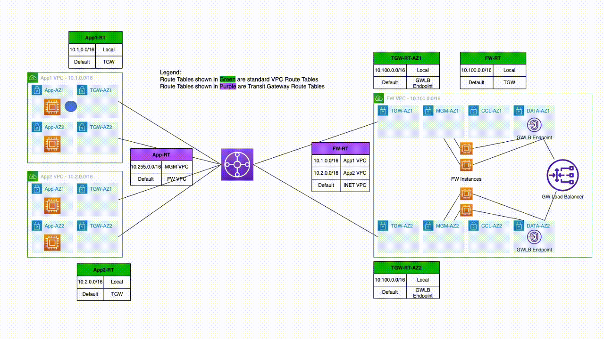
Traffic flow between App1 and App2 VPCs is very similar to how it flows to the Internet
- Linux host sends traffic towards the other App1 VPC
- VPC route table has a default gateway out of that App subnet going to TGW
- TGW route table for App VPC sends that via default route to firewall VPC
- Traffic arrives in firewall VPC in TGW subnet. Default route in that subnet points to GWLBe
- GWLBe sends that traffic to GWLB
- GWLB sends it to one of the firewalls, encapsulated in GENEVE
- Firewall inspects that traffic and returns it to GWLB via GENEVE
- GWLB sends that to GWLBe
- The default gateway for the subnet where GWLBe is connect points to TGW
- TGW route table for firewall VPC has a route to destination App VPC
- Traffic arrives in App VPC and is sent to the destination Linux host
Firewall Bootstrap
As with other AWS EC2 instances, user data is used to bootstrap the firewalls.
This is an example user data.
CclSubnetRange defines the range of subnet where firewall CCL links are connected. The firewalls discover each other on this range.
HealthProbePort define the port on which the firewall will start a TCP listener that is used by GWLB to probe the firewall of up status.
This simplified configuration gets converted into ASA configuration when the firewall boots up for the first time. It is also possible to directly specify CLI commands that the firewall will boot with. See an example here: https://www.cisco.com/c/en/us/td/docs/security/secure-firewall/management-center/cluster/ftdv-cluster-public.html#Cisco_Concept.dita_0bbab4ab-2fed-4505-91c3-3ee6c43bb334
{
"AdminPassword": "password",
"Hostname": "gwlb-ftd-1",
"FirewallMode": "Routed",
"ManageLocally": "No",
"Cluster": {
"CclSubnetRange": "10.1.1.1 10.1.1.16",
"ClusterGroupName": "lab_cluster_1",
"Geneve": "Yes",
"HealthProbePort": "12345"
}
}Interacting with CDO
Cisco Defense Orchestrator has a robust GUI interface for managing many different products. However, it lacks in programmability support.
Luckily, the product is built as API-first. That means that as we work in the GUI using a web browser, it interacts with CDO backend using well structured REST APIs.
We can easily reverse engineer those APIs using developer tools available in most browsers.
The template included in this post includes ansible playbooks that utilize the CDO REST APIs to fully automate adding of the firewall clusters into CDO.
There's also a section in the document on adding clusters to CDO manually through the web GUI.
Ansible Playbook
Once the firewalls are provisioned by Terraform, cd-onboard-single.yml is executed for each cluster to be added.
Inventory
ansible-inv.yml file is generated dynamically by terraform based on ansible-inv.tftpl template
This is an example of a generated file.
The inventory is broken into two sections.
The top section defines cdo-related values. acp variable reference to the name of the Access Policy in FMC that will be applied to the newly added devices
The second section defines the clusters to be added to CDO. Only one of the cluster members needs to be added to CDO in each AZ. Terraform template will populate it with the first firewall in each AZ. It is quite possible that the first firewall does not become the Control node. However, the cluster can still be added using a Data node.
all:
hosts:
cdo:
ansible_network_os: eos
token: eyJhbGciOiJSUzI1NiIsInR5cCI6IkpXVCJ9.eyJ2ZXIiOiIwIiwi
base_url: https://www.defenseorchestrator.com
acp: AWS-Cluster
tier: FTDv30
licenses: BASE,THREAT,URLFilter,MALWARE
children:
clusters:
hosts:
ftd-cluster-1:
hosts:
- 10.100.1.55
ftd-cluster-2:
hosts:
- 10.100.2.237
vars:
ansible_network_os: ios
ansible_user: admin
ssh_options: -o ConnectTimeout=5 -o ConnectionAttempts=1 -oStrictHostKeyChecking=no -oUserKnownHostsFile=/dev/null
Playbook components
Note that the playbook is executed on cdo host only. We use hostvar variable to lookup cluster information from the inventory.
Many of the tasks in the playbook were reverse engineered using Developer Tools in Chrome.
At the top, we define an anchor variable with HTTP parameters to reuse them in other tasks.
General
- hosts: cdo
connection: httpapi
gather_facts: False
vars:
http_headers: &uri_options
timeout: 15
headers:
Accept: "application/json"
Content-Type: "application/json"
Authorization: "Bearer {{token}}" Validation
Here we ensure that the cluster name supplied via CLI is included in the inventory
- name: Check if cluster_name was supplied
fail:
msg: cluster_name var must be supplied. Eg. --extra-vars='cluster_name=ftd_cluster'
when: cluster_name is not defined
- name: Check if cluster is in inventory
fail:
msg: "Cluster {{cluster_name}} is not found in inventory"
when: cluster_name not in hostvarscdFMC Information
- name: Get UID of cdFMC
uri:
url: "{{base_url}}/aegis/rest/v1/services/targets/devices?q=deviceType:FMCE"
<<: *uri_options
register: fmc_uid
- name: Get FMC Domain UID
uri:
url: "{{base_url}}/aegis/rest/v1/device/{{fmc_uid.json.0.uid}}/specific-device"
<<: *uri_options
register: domain_uidFind ID of Access Policy
Note that we're not using the anchor variable here because we need an additional fmc-hostname header.
- name: Get Access Policies
uri:
url: "{{base_url}}/fmc/api/fmc_config/v1/domain/{{domain_uid.json.domainUid}}/policy/accesspolicies?limit=1000"
timeout: 15
headers:
Accept: "application/json"
Content-Type: "application/json"
Authorization: "Bearer {{token}}"
fmc-hostname: "{{fmc_uid.json.0.host}}"
register: acp_list
- name: Find matching policy
set_fact:
acp_id: "{{item.id}}"
loop: "{{acp_list.json['items']}}"
loop_control:
label: "{{item.name}}/{{item.id}}"
when: item.name == acp
- name: Stop if ACP is not found
meta: end_play
when: acp_id is not definedAdd FTD Device to CDO and set it to Pending
- name: Add Device to CDO
uri:
url: "{{base_url}}/aegis/rest/v1/services/targets/devices"
timeout: 15
method: POST
body_format: json
body:
associatedDeviceUid: "{{fmc_uid.json.0.uid}}"
deviceType: FTDC
metadata:
accessPolicyName: "{{acp}}"
accessPolicyUuid: "{{acp_id}}"
license_caps: "{{licenses}}"
performanceTier: "{{tier}}"
model: false
name: "{{cluster_name}}"
state: NEW
type: devices
<<: *uri_options
register: cdo_device
- name: Get specific-device
uri:
url: "{{base_url}}/aegis/rest/v1/device/{{cdo_device.json.uid}}/specific-device"
<<: *uri_options
register: specific_device
- name: Initiate Onboarding
uri:
url: "{{base_url}}/aegis/rest/v1/services/firepower/ftds/{{specific_device.json.uid}}"
method: PUT
body_format: json
body:
queueTriggerState: INITIATE_FTDC_ONBOARDING
<<: *uri_optionsGet Onboarding Command and Send it to FTD
The SSH task will continue retrying every 30 seconds until it's able to SSH into the FTD and get a success response from config manager add command
- name: Get onboarding command
uri:
url: "{{base_url}}/aegis/rest/v1/services/targets/devices/{{cdo_device.json.uid}}"
<<: *uri_options
register: cli_command
- name: Print command
debug:
msg: "{{cli_command.json.metadata.generatedCommand}}"
- name: Send config manager command
connection: local
command: "ssh {{hostvars[cluster_name].ssh_options}} {{hostvars[cluster_name].ansible_user}}@{{item}} {{cli_command.json.metadata.generatedCommand}}"
register: manager
retries: 50
delay: 30
until: '"success" in manager.stdout'
loop: "{{hostvars[cluster_name].hosts}}"Initiate Onboarding and Wait for Completion
Here, we trigger the onboarding process and wait for the device to reach Online status.
Notice that we send the onboarding command to the firewall before we initiate the onboarding process in CDO. The firewall continually tries to reach out to CDO to register, so it is ok to perform this step after the SSH command finally succeeds.
Another important point is the onboarding process only runs for a few minutes, so it is crucial that the config manager add command is executed in this short onboarding window. That is another reason that we make sure that the SSH command is successful before we put CDO into onboarding mode.
- name: Initiate Registration
uri:
url: "{{base_url}}/aegis/rest/v1/services/firepower/ftds/{{specific_device.json.uid}}"
method: PUT
body_format: json
body:
queueTriggerState: INITIATE_FTDC_REGISTER
<<: *uri_options
- name: Wait for registration completion
uri:
url: "{{base_url}}/aegis/rest/v1/services/targets/devices/{{cdo_device.json.uid}}"
<<: *uri_options
retries: 50
delay: 30
register: device_state
until: device_state.json.connectivityState == 1Pause
Finally, we pause for two minutes just to ensure that CDO is ready for the next cluster.
- name: Initiate Registration
uri:
url: "{{base_url}}/aegis/rest/v1/services/firepower/ftds/{{specific_device.json.uid}}"
method: PUT
body_format: json
body:
queueTriggerState: INITIATE_FTDC_REGISTER
<<: *uri_options
- name: Wait for registration completion
uri:
url: "{{base_url}}/aegis/rest/v1/services/targets/devices/{{cdo_device.json.uid}}"
<<: *uri_options
retries: 50
delay: 30
register: device_state
until: device_state.json.connectivityState == 1Terraform Resources
The template is broken up into several files by function. All of the files contain comments describing the purpose of each resources. In this post, I will call out specific resources.
variable.tf
Here are important variables that need to be set:
- ssh_sources defines the public IP address where SSH connections to the bastion/management host will initiate from. This variable is used in provisioning the security group.
- ssh_file defines the location of the ssh private key that will be uploaded to the bastion host to ssh to the firewalls
- ssh_key is the name of the ssh key in AWS that will be used for the firewall EC2 instances. It must match the private key above
- cdo_token holds the value of the API token from CDO
- cluster_prefix is used for naming of the clusters. This name will be prepended with a number for each AZ. Eg. ftd-cluster-1, ftd-cluster-2, etc
- acp_policy defines the access policy for these clusters in cdFMC
vpc.tf
This file defines the VPCs, subnets for those VPCs as well as security groups.
To keep the template dynamic, all subnet addresses are calculated based on VPC CIDR blocks. For example:
# Subnets for Firewall data Interfaces
resource "aws_subnet" "fw_data" {
count = local.fw_az_count
vpc_id = aws_vpc.fw.id
cidr_block = cidrsubnet(aws_vpc.fw.cidr_block, 8, 5 + count.index)
availability_zone = var.fw_azs[count.index]
tags = {
Name = "fw_vpc_data_subnet_${count.index + 1}"
Project = "gwlb"
}
}gwlb.tf
This firewall defines resources related to GWLB.
In Target Group definition we match the health check port to what's configured on the firewalls.
We're using stickiness based only on source and destination IP to ensure that any fragmented packets without layer 4 information land on the same firewall.
# Target group is IP based since FTD's are provisioned with multiple interfaces
resource "aws_lb_target_group" "ftd" {
name = "ftdtg"
protocol = "GENEVE"
vpc_id = aws_vpc.fw.id
target_type = "ip"
port = 6081
stickiness {
type = "source_ip_dest_ip"
}
health_check {
port = 12345
protocol = "TCP"
}
}time_delay resource is used to force a delay after creation of GWLBe because it takes time to initialize
# GWLB Endpoints. One is required for each AZ in App1 VPC
resource "aws_vpc_endpoint" "fw" {
count = local.fw_az_count
service_name = aws_vpc_endpoint_service.gwlb.service_name
vpc_endpoint_type = aws_vpc_endpoint_service.gwlb.service_type
vpc_id = aws_vpc.fw.id
tags = {
Name = "fw_gwlb_endpoint_${count.index + 1}"
Project = "gwlb"
}
}
# Delay after GWLB Endpoint creation
resource "time_sleep" "fw" {
create_duration = "180s"
depends_on = [
aws_vpc_endpoint.fw
]
}tgw.tf
This file defines the TGW, TGW route tables and the attachments
One call out is the attachment to the firewall VPC that we create in appliance mode to ensure persistency to which firewall the traffic is forwarded.
# TGW Attachment to firewall VPC
resource "aws_ec2_transit_gateway_vpc_attachment" "fw" {
subnet_ids = aws_subnet.fw_tgw.*.id
transit_gateway_id = aws_ec2_transit_gateway.tgw.id
vpc_id = aws_vpc.fw.id
transit_gateway_default_route_table_association = false
appliance_mode_support = "enable"
tags = {
Name = "fw_attachment"
Project = "gwlb"
}
}routes.tf
This file defines VPC routes.
In firewall VPC, there are a few routes that point to GWLBe. GWLBe takes a few minutes to initialize and we use a time_sleep resource to postpone when the routes are created towards that GWLBe
# Default gateway on Firewall TGW Route Table pointing to GWLB endpoint
resource "aws_route" "fw_tgw_dfgw" {
count = local.fw_az_count
route_table_id = aws_route_table.fw_tgw[count.index].id
destination_cidr_block = "0.0.0.0/0"
vpc_endpoint_id = aws_vpc_endpoint.fw[count.index].id
depends_on = [
time_sleep.fw
]
}ftd.tf
This defines Threat Defense firewalls. At the time of this writing, version 7.3 is used.
For user_data, a formula is used to calculate the correct CCL IP Address range. It's important for this range to only include firewalls in the same Availability Zone. If this range includes firewalls from multi AZs, they will contunuously try and fail to join into a common cluster.
# FTD Firewalls
resource "aws_instance" "ftd" {
count = local.fw_az_count * var.fw_per_az
ami = data.aws_ami.ftdv_7_3.id
instance_type = "c5.xlarge"
key_name = var.ssh_key
user_data_replace_on_change = true
user_data = <<-EOT
{
"AdminPassword": "Cisco123!",
"Hostname": "gwlb-ftd-${count.index + 1}",
"FirewallMode": "Routed",
"ManageLocally": "No",
"Cluster": {
"CclSubnetRange": "${cidrhost(cidrsubnet(aws_vpc.fw.cidr_block, 8, 16), 1 + 16 * floor(count.index/var.fw_per_az))} ${cidrhost(cidrsubnet(aws_vpc.fw.cidr_block, 8, 16), 14 + 16 * floor(count.index/var.fw_per_az))}",
"ClusterGroupName": "lab_cluster_${floor(count.index/var.fw_per_az)+1}",
"Geneve": "Yes",
"HealthProbePort": "12345"
}
}
EOT
network_interface {
network_interface_id = aws_network_interface.ftd_management[count.index].id
device_index = 0
}
network_interface {
network_interface_id = aws_network_interface.ftd_diagnostic[count.index].id
device_index = 1
}
network_interface {
network_interface_id = aws_network_interface.ftd_data[count.index].id
device_index = 2
}
network_interface {
network_interface_id = aws_network_interface.ftd_ccl[count.index].id
device_index = 3
}
tags = {
Name = "ftd_${count.index + 1}"
Project = "gwlb"
}
}inet.tf
This defines resources for the Internet VPC
mgm.tf
This defines all resources for the bastion host. Notably, this file also includes VPC, TGW and VPC route tables, security groups, etc.
If using this template for production, you can simply remove this file.
This host is provisioned with ansible and we also upload the private key to the appropriate directory.
resource "aws_instance" "jumphost" {
ami = data.aws_ami.ami_linux.id
instance_type = "t2.micro"
key_name = "aws-ssh-1"
subnet_id = aws_subnet.mgm.id
associate_public_ip_address = true
vpc_security_group_ids = [aws_security_group.management_access.id]
user_data = <<-EOT
#!/bin/bash
amazon-linux-extras install epel -y
yum-config-manager --enable epel
yum update -y
pip3 install ansible
pip3 install urllib3
pip3 install ciscoisesdk
/usr/local/bin/ansible-galaxy collection install cisco.ise -p /usr/local/lib/python3.7/site-packages/
EOT
tags = {
Name = "mgm_jumphost"
Project = "gwlb"
}
connection {
type = "ssh"
user = "ec2-user"
host = self.public_ip
private_key = file(var.ssh_file)
agent = false
}
provisioner "remote-exec" {
inline = ["sudo cloud-init status --wait"]
}
provisioner "file" {
source = var.ssh_file
destination = "/home/ec2-user/.ssh/id_rsa"
}
provisioner "remote-exec" {
inline = ["chmod 400 /home/ec2-user/.ssh/id_rsa"]
}
}ansible.tf
This file generates the inventory file from ansible-inv.tftpl template
resource "local_file" "ansible_inv" {
filename = "ansible-inv.yml"
content = templatefile("ansible-inv.tftpl", {
cdo_token = var.cdo_token
acp_policy = var.acp_policy
clusters = {
for c in range(local.fw_az_count): "${var.cluster_prefix}-${c+1}" => [aws_network_interface.ftd_management[c*var.fw_per_az].private_ip]
}
})
}We use a null resource to launch the ansible playbook. CDO only allows one firewall to be onboarded at any one time. ansible-playbook is launched sequentially for each cluster using remote-exec.
resource "null_resource" "ftd_provision" {
connection {
type = "ssh"
user = "ec2-user"
host = aws_instance.jumphost.public_ip
private_key = file("~/.ssh/aws-ssh-1.pem")
agent = false
}
provisioner "file" {
source = "${path.module}/ansible-inv.yml"
destination = "/home/ec2-user/ansible-inv.yml"
}
provisioner "file" {
source = "${path.module}/cdo-onboard-single.yml"
destination = "/home/ec2-user/cdo-onboard-single.yml"
}
provisioner "remote-exec" {
inline = [for c in range(local.fw_az_count): "ansible-playbook -i /home/ec2-user/ansible-inv.yml /home/ec2-user/cdo-onboard-single.yml --extra-vars='cluster_name=${var.cluster_prefix}-${c+1}'"]
}
depends_on = [
aws_instance.ftd,
local_file.ansible_inv
]
}Provisioning
The following video shows all the resources being provisioned.
At the end of provisioning the terraform template outputs IP addresses that we will use to get into resources. All of the hosts can be access from the management host which is accessible via SSH over the Internet.
The clusters should be fully onboarded in CDO once terraform apply completes.
Apply complete! Resources: 142 added, 0 changed, 0 destroyed.
Outputs:
app1_servers = [
"10.1.1.54",
"10.1.2.230",
]
app2_servers = [
"10.2.1.30",
"10.2.2.20",
]
ftd_management = [
"10.100.1.178",
"10.100.1.121",
"10.100.2.133",
"10.100.2.237",
]
jumphost = "54.227.103.246"Firewalls
The firewalls take 15-20 minutes to initialize. Once initialized, we can SSH into them from the bastion host and view the initial cluster config using show running-config command.
Note how the config we supplied in user_data is converted to config commands needed to initialize the cluster.
> show running-config
: Saved
NGFW Version 7.3.0
!
hostname gwlb-ftd-1
!
interface Management0/0
management-only
nameif management
security-level 0
ip address dhcp
!
interface TenGigabitEthernet0/0
nameif geneve-vtep-ifc
security-level 0
ip address dhcp
!
interface TenGigabitEthernet0/1
nve-only cluster
nameif ccl_link
security-level 0
ip address dhcp
!
interface vni1
description Clustering Interface
segment-id 1
vtep-nve 1
!
interface vni2
proxy single-arm
nameif ge
security-level 0
vtep-nve 2
!
ftp mode passive
ngips conn-match vlan-id
no object-group-search access-control
object network ccl#link
range 10.100.16.1 10.100.16.14
object-group network cluster#group
network-object object ccl#link
nve 2
encapsulation geneve
source-interface geneve-vtep-ifc
nve 1
encapsulation vxlan
source-interface ccl_link
peer-group cluster#group
cluster group lab_cluster_1
local-unit 190
cluster-interface vni1 ip 1.1.1.190 255.255.255.0
priority 1
health-check holdtime 3
health-check data-interface auto-rejoin 3 5 2
health-check cluster-interface auto-rejoin unlimited 5 1
health-check system auto-rejoin 3 5 2
health-check monitor-interface debounce-time 9000
clacp system-mac auto system-priority 1
no unit join-acceleration
enable
mtu management 1500
mtu geneve-vtep-ifc 1806
mtu ccl_link 1960One of the firewalls in each Availability Zone gets elected as Control node and all the other firewalls become Data nodes. We can get cluster status using show cluster info command.
Note that we have two separate clusters, one for each Availability Zone
> show cluster info
Cluster lab_cluster_1: On
Interface mode: individual
Cluster Member Limit : 16
This is "190" in state CONTROL_NODE
ID : 0
Version : 9.19(1)
Serial No.: 9AGTS3MFQ51
CCL IP : 1.1.1.190
CCL MAC : 0aa1.e6d5.65f7
Module : NGFWv
Resource : 4 cores / 7680 MB RAM
Last join : 18:06:08 UTC Mar 6 2023
Last leave: N/A
Other members in the cluster:
Unit "197" in state DATA_NODE
ID : 1
Version : 9.19(1)
Serial No.: 9AB2R0XATTA
CCL IP : 1.1.1.197
CCL MAC : 0aba.4eb9.c131
Module : NGFWv
Resource : 4 cores / 7680 MB RAM
Last join : 18:06:09 UTC Mar 6 2023
Last leave: N/A> show cluster info
Cluster lab_cluster_2: On
Interface mode: individual
Cluster Member Limit : 16
This is "226" in state CONTROL_NODE
ID : 0
Version : 9.19(1)
Serial No.: 9AK7BU2BUUE
CCL IP : 1.1.1.226
CCL MAC : 0e93.bb00.a307
Module : NGFWv
Resource : 4 cores / 7680 MB RAM
Last join : 18:06:11 UTC Mar 6 2023
Last leave: N/A
Other members in the cluster:
Unit "236" in state DATA_NODE
ID : 1
Version : 9.19(1)
Serial No.: 9AH19SW708Q
CCL IP : 1.1.1.236
CCL MAC : 0e7c.daed.141b
Module : NGFWv
Resource : 4 cores / 7680 MB RAM
Last join : 18:07:35 UTC Mar 6 2023
Last leave: N/ACisco Defense Orchestrator (CDO)
This section talks about onboarding clusters manually. It is included here for reference or in cases ansible onboarding is not an option.
CDO now comes with a full featured Firewall Management Center (FMC) called cloud-delivered FMC (cdFMC).
To access it, browse to https://www.defenseorchestrator.com/ and login with your CCO credentials.
To access cdFMC, click on Policies | FTD Policies
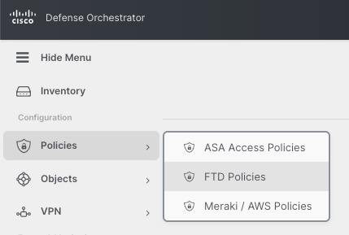
Access Policy
In order to onboard Thread Defense devices, we must have an Access Policy. cdFMC comes with a default policy or we can create a new policy.
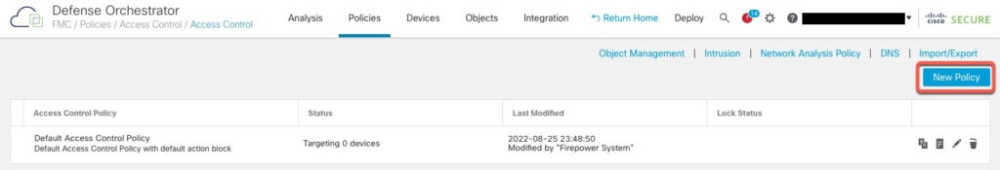
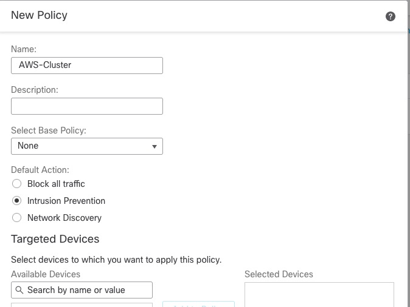
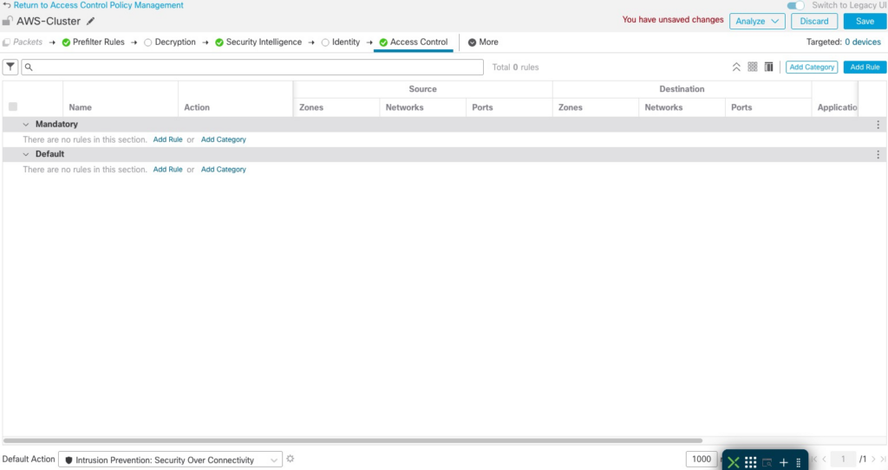
Adding Clusters
Unlike traditional on-prem FMC, we add devices from the CDO GUI and not in cdFMC.
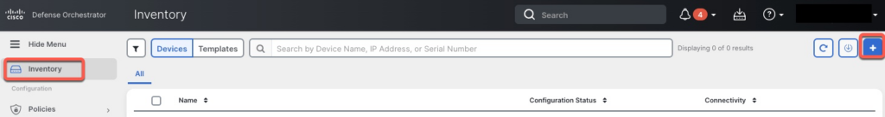
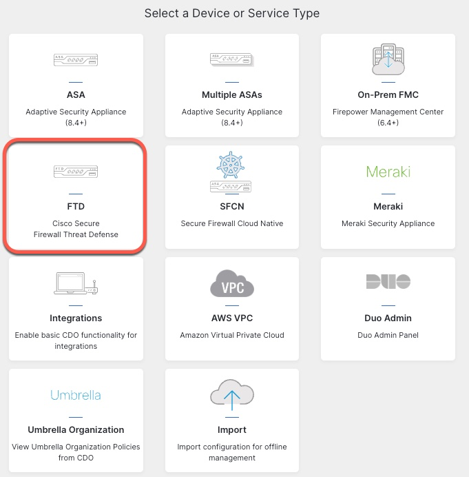
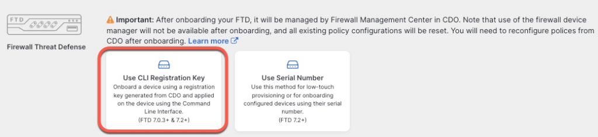
For the name, we will use the same name as the cluster config.
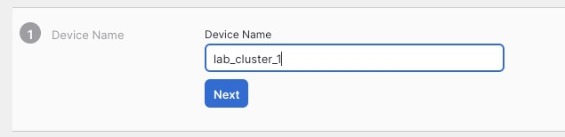
We pick the Access Control Policy we created earlier
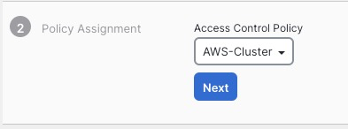
On the next screen, we select performance tier and the licensing options
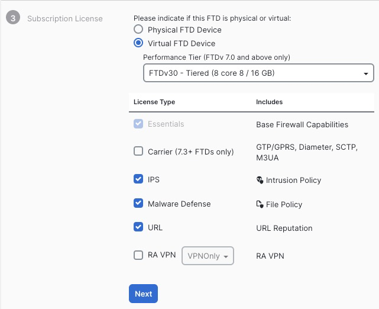
On the next screen, we are given the command that we need to execute to add the cluster to CDO. It is crucial that you click Next on this screen before pasting this command in CLI.

We're finally presented with the completion screen

Going back to CLI, we paste in the onboarding command
> configure manager add ***.app.us.cdo.cisco.com O5BJujeO0rQiqDzdRgFcgDaS3rY6a0A8 6oysb5geIYyw23mF9qIzWlcBXBgDoxdO ***.app.us.cdo.cisco.com
Manager ***.app.us.cdo.cisco.com successfully configured.
Please make note of reg_key as this will be required while adding Device in FMC.Repeat the same steps for the second cluster.
Back in CDO Inventory screen, we can see that the clusters are onboarding.
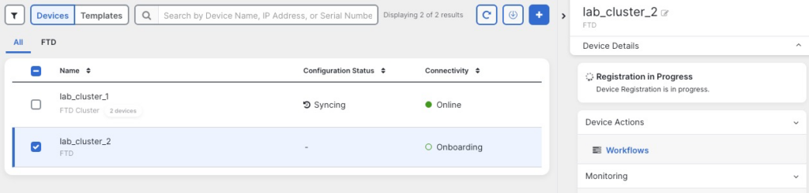
After 10 minutes or so, we can see both clusters fully onboarded in FMC GUI.
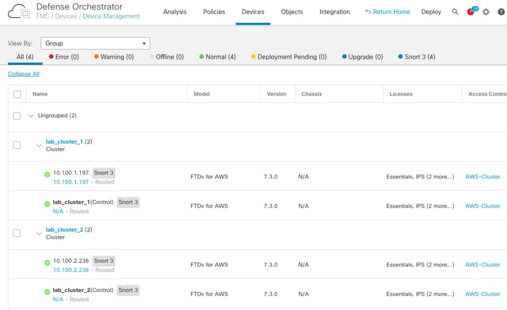
Tuning
MSS
During testing, I found that traffic between App1 and App2 VPCs would fail due to MTU sizes between the VPCs. MTU discovery would also fail due to ICMP packets being dropped.
We need to create a FlexConfig policy to lower the TCP MSS Value
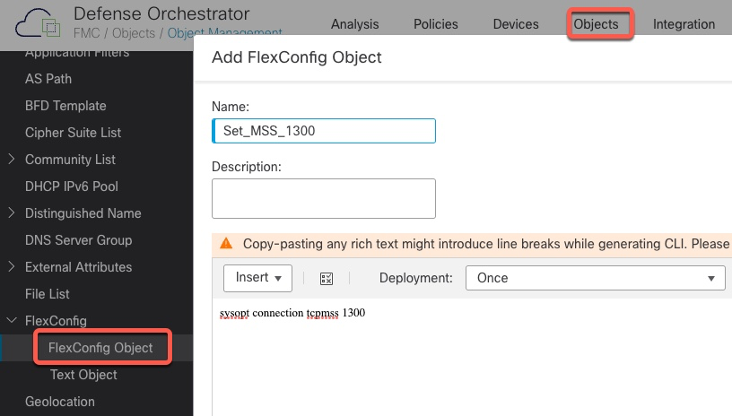
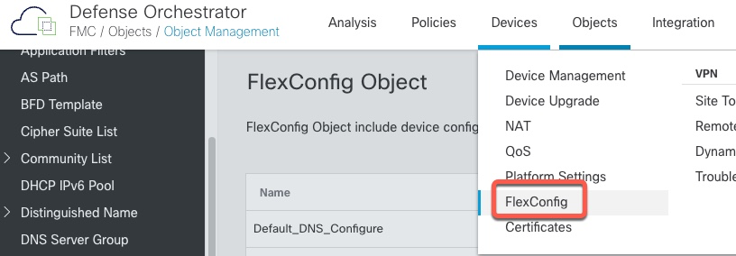
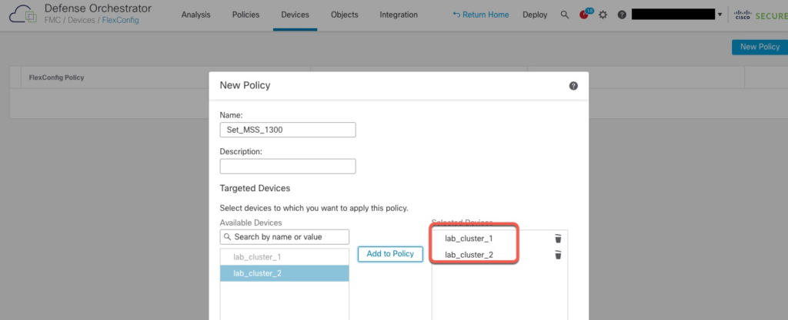
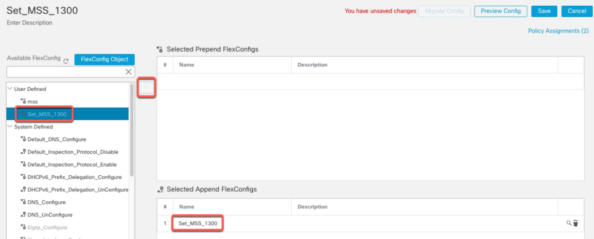
We now need to deploy this additional configuration
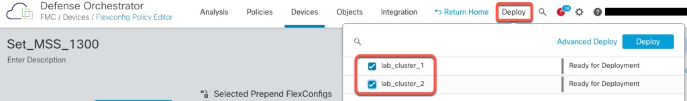
Access Policy
To confirm that our Access Policy is working, let's add a rule to block Gambling URL category.
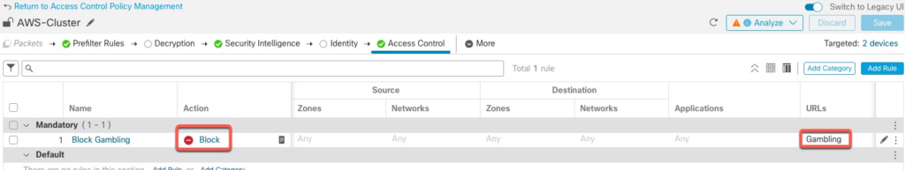
Verification
Logging
When using cdFMC, all the logs are sent to CDO's integrated Event Logging facility
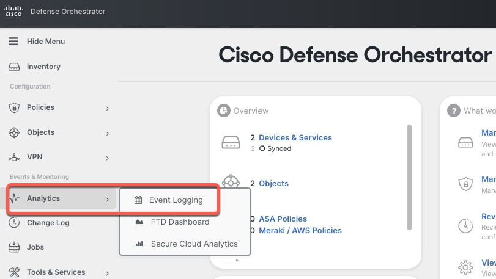
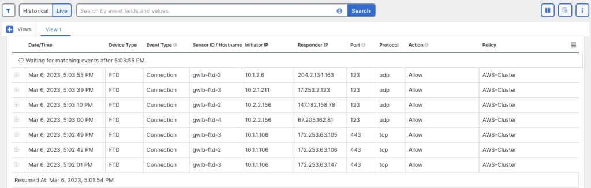
Internet Traffic - Allow
For this test, we will log in to one of the App servers and execute curl command to connect to google.com
Connection was successful
[ec2-user@ip-10-1-1-106 ~]$ curl https://www.google.com >/dev/null
% Total % Received % Xferd Average Speed Time Time Time Current
Dload Upload Total Spent Left Speed
100 16153 0 16153 0 0 45480 0 --:--:-- --:--:-- --:--:-- 45501
[ec2-user@ip-10-1-1-106 ~]$ In CDO events, we can confirm that the connection went through one of the firewalls.
Note that the logs show multiple firewalls processing connections.
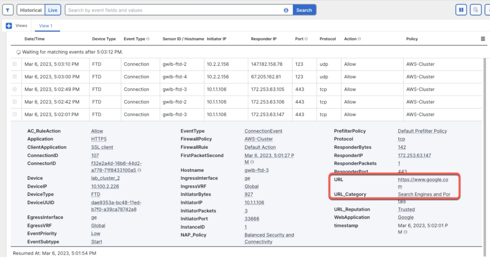
Internet Traffic - Block
If we try to access a gambling site, our connection is blocked as configured.
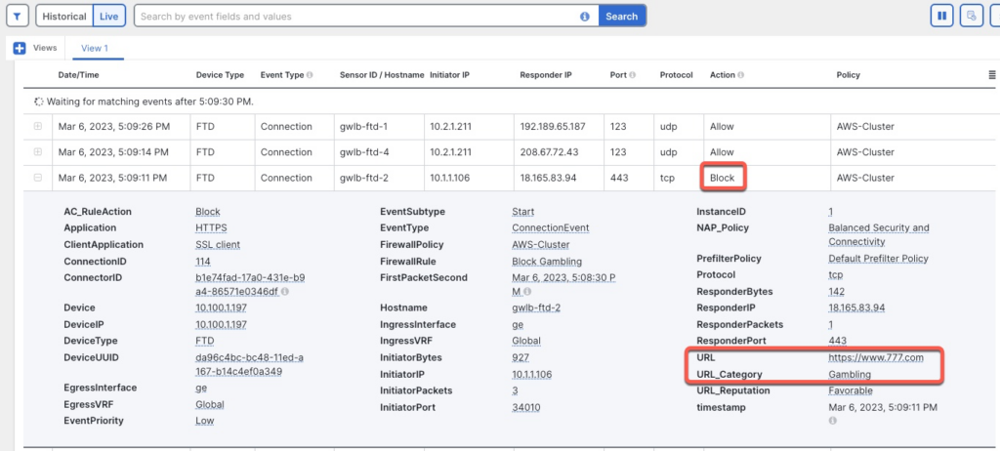
East-West Traffic
If we try to SSH from App1 VPC to App2 VPC, we can confirm in the Event Log that the connection go through the firewall cluster
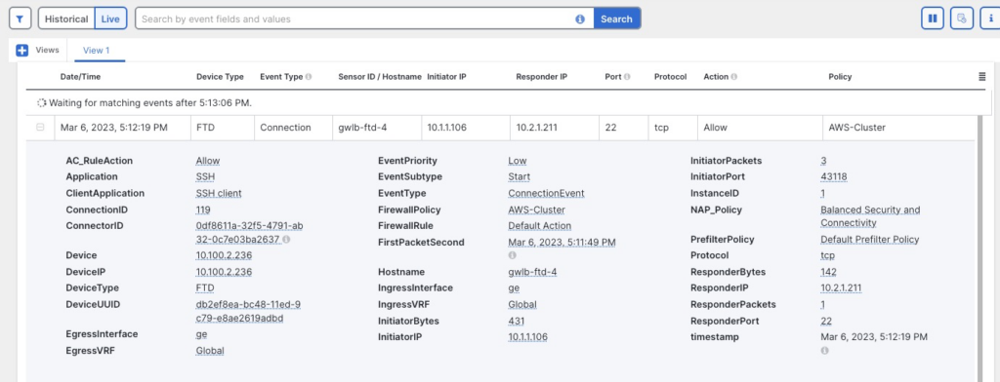
AWS Target Group
We can monitor the health of the firewalls from AWS perspective under EC2 | Target Groups
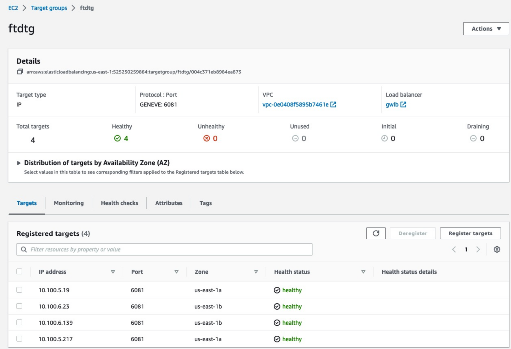